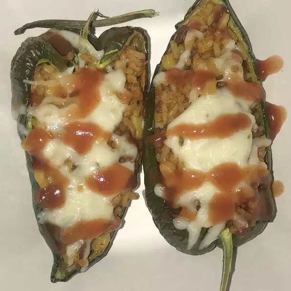

Taco Meat

Description
This recipe makes just the taco meat. You have to buy everything else, of
course. Make a big batch and use for a multiple of different meals: add to
bean burritos for a more hearty and tasty burrito, or add a can of beans
(kidney, red, or pinto) and use for Frito® Pie, Navajo tacos, or taco
salad.
Ingredients
- 1 pound lean ground beef
- ½ teaspoon onion powder
- ½ teaspoon garlic salt
- ½ teaspoon celery salt
- ½ teaspoon ground cumin
- 1 (8 ounce) can tomato sauce, or more to taste
Steps
- Preheat an oven to 450 degrees F (230 degrees C)
-
Place chicken breasts between two sheets of heavy plastic (resealable
freezer bags work well) on a solid, level surface. Firmly pound chicken
with the smooth side of a meat mallet to a thickness of 1/2-inch. Season
chicken thoroughly with salt and pepper.
- Beat eggs in a shallow bowl and set aside.
-
Mix bread crumbs and 1/2 cup Parmesan cheese in a separate bowl, set
aside.
-
Place flour in a sifter or strainer; sprinkle over chicken breasts,
evenly coating both sides.
-
Dip a flour-coated chicken breast in beaten eggs. Transfer breast to the
bread crumb mixture, pressing crumbs into both sides. Repeat for each
breast. Let chicken rest for 10 to 15 minutes.
-
Heat 1 cup olive oil in a large skillet on medium-high heat until it
begins to shimmer. Cook chicken in the hot oil until golden, about 2
minutes per side. The chicken will finish cooking in the oven.
-
Transfer chicken to a baking dish. Top each breast with about 1/3 cup of
tomato sauce. Layer each chicken breast with equal amounts of mozzarella
cheese, fresh basil, and provolone cheese. Sprinkle remaining Parmesan
over top and drizzle with 1 tablespoon olive oil.
-
Bake in the preheated oven until cheese is browned and bubbly and
chicken breasts are no longer pink in the center, 15 to 20 minutes. An
instant-read thermometer inserted into the center should read at least
165 degrees F (74 degrees C).